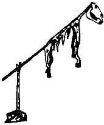

Uyumuş kalmışım. Güneş epeyce yükselmiş. Azman olacak aygır bozuntusu, gelmiş geçmiş tüm Türk atlarının bu yüzkarası hiç tınmayıp uyarmadığı için, gündüz ilk gördüğüm de bir ordu dolusu Kitan oldu. Uyandım ama uyuyor gibi yaptım, iki asker başucumda konuşuyorlardı, ama kendi Tunguz bozması Moğol kırması dillerinde konuştukları için hiçbir şey anlamadım. Biraz sonra başlarına bir onbaşı geldi ve bana o kadar da uzak olmayan Uygur dili ile kim olduğumu sordu. Kitanlardan biri bu kez bozuk, kırık bir Uygurca ile, esrik yoksulun biri olduğumu, ilerde otlayan güçsüz ve salak beygirin benim hayvanım olduğunu, yağmalamaya değer bir malım bulunmadığını, eşya dengimi açtıklarını, içinde ince ak keçeden yapılma, leş gibi kokan bir kaftandan başka bir şey bulamadıklarını söyledi. Askerin bu dediklerine kızdım tabii. Yerimden doğrulmak, yabanın erini gırtlağından tutup “bana ha, Azman’ıma ha, kaftanıma ha” diyerek pataklamak istedim.
Yapmadım. Kuşaklar boyunca gerçek inancımızı saklayarak yaşamak, gelen Uygur’a ağam, giden Kırgız’a başağam, çöreklenip kalan Kitan’a han’ım demek bizleri inanılmaz denli akıllı, kıvrak ve kurnaz kıldığı için yapmadım. Yapmanın da bir gereği yoktu. Şimdi uyur yılanı niye uyandırayım? Yerimden fırlayıp adamı altıma almak yerine, kendimi kutlanmalıydım. Demek ki saklı gizli yaşamanın bizlere kazandırdığı bin bir kılığa girebilme özelliği işe yaramıştı. Demek ki kara kemikten inen bu acınası askerler, ak kemiklerin en akından gelen Tengere Tardu Tigin ejderini tanıyamamışlardı. Tanıyamamışlardı ki, Uygur Onbaşı benim gibi düşünmedi, “şu uyur ejderin kuyruğuna basmayayım” demedi. Kuyruğum olmadığı için, ayı oğlu ayı, kaburgalarıma sert deri çizmeli ayağını geçiriverdi.
İster istemez uyandım. En güzel Uygurcamla “yüzbaşının” benden ne istediğini, kendisine nasıl bir yardımda bulunabileceğimi sordum. Akçeyse akçe, kaftansa kaftan bağışlayabilirdim hani. Herif kahkahalarla güldü. Yanındaki Kitan köstebekleri de beraber. Bu gülüşmeler başımıza daha bir sürü asker topladı. Sung ordularıyla kutlarını sınamaya, talihlerini denemeye giden beş bin kişilik koca bir ordunun yolu üstünde uyuyacağım tutmuş! Askerler o kadar gürültü yaptı ki, sonunda olan oldu ve hanları olacak o kuyruksuz sıçan da gelip başıma dikildi. Bu kez onbaşı gerekli açıklamaları yaptı. Tanrının dokunduğu bir abdal imişim, dilimden anlamış, yanımda mal namına pis bir kaftan varmış. Öyle pismiş ki, kutlu Han sabah bayıra karşı bağırsaklarını boşalttıktan sonra kıçını silmeye bile iğrenilmiş, çünkü ben epeydir bu işi zaten kendim yapıyormuşum, günlerdir bir şey yemediğim için kaburgalarım sayılıyormuş, besbelli atımın kanını eme eme yarasaya dönmüşmüşüm, şimdi şurada beni döverek altıma ettirseler kan edermişim, hayvan da dolayısıyla bir kemik torbası imiş, şamanların kanlarını akıtmaksızın kurban ettiği atların sırıklara takılarak bırakılan derilerinde bile daha çok can varmış, onların sırtına atlayıp deh desen, ola ki iki üç adım atabilirlermiş, ama benim “Azman” demekte direttiğim atta hiç umut yokmuş!
Han bu son söyleneni o kadar gülünç buldu ki tam beş dakika güldü. Olan, en başından beri başımda duranlara oldu. İstemeye istemeye onlar da yeni baştan gülmek durumunda kaldılar. Alçak boylu, küçük tulum göbekli, kolu budu kısa Han’ın parmağı ile gösterdiği yöne bakınca benim de gülesim geldi. Kendimi güç tuttum. Çünkü benim Azman’ım değil, acınacak denli arık bir yılkı atıydı bu. Bu gülme gülüşme çağı geçtikten sonra han beni şaşırtan çok iyi Uygurcası ile kim olduğumu, nereden gelip nereye gittiğimi sordu. Ben de dedim ki:
“Köktanrı yüce hanın uğraşını kutlu etsin. Erlik, yağısını sürüm sürüm süründürsün. Gebe karılarını al karısı bassın. Abdalım. Adım Tersanlamış. Oralarda Akhun soyundan gelenlerin değeri bilinmediği için Tat ülkesini bıraktım. Oradan geliyorum. Duydum ki Yüce Kitan hanının savaşı varmış, koştum ordusuna vardım. Savaşçılığım çok iyi değilse de isterse ordusunun çabışı ya da sübaşısı olabilirim.”
Han’ı ve gerçek sübaşısı olan iriyarı Tatarı gülmekten yere düşmesinler diye tutmak zorunda kaldılar. Abdalların ve Akhunların kimler olduğunu bilmese de Han, Tatlar kadar tatsız, onlar kadar kutsuz bir değer bilmez olmadığını göstermek için bana yenice bir çapan ve iyice bir at verilmesini buyurdu.
Uygur Onbaşı bunları bana teslim ederken “Ne biçim çapan bu? Ölü sıçan gibi kokuyor. Bu ne biçim at, ayakta durmaya hali yok, ben mi onu taşıyacağım yoksa” demem, biraz önce yerine göz diktiğim sübaşının dikkatini çekti. Han’ın kulağına bir şeyler fısıldadı. Han;
“De bakalım abdal! Ben bu Tabgaç’ı bozar mıyım bu orduyla?” diye sordu.
Tatar’ın neler demiş olabileceğini ve benim neler demem gerektiğini biliyordum.
“Han’ım, bağışla ama bu birkaç çulsuz çapulcuyla Tabgaç bozulur mu? Bu arık güçsüz atlarla iki konak gidemezsiniz. Alın şu iki eri, bunlar gibi cücelerle Sung imparatorunu ancak gıdıklayarak öldürürsünüz!”
Salak askerlerin arasında bir sessizlik oldu. Hanlarıyla hiç kimsenin böyle konuştuğunu görmemişlerdi. Sonra Han’ın kesik kahkahası duyuldu.
“Hay albızlar alası. Demek bunlar cüce ha!”
Eliyle, kendisinin gündüz eşikçileri bölüğünden olan, her biri ikişer kulaçlık iki devi gösteriyordu. Bu kez bütün askerler öğürerek, böğürerek, tepine tepine güldüler. Benim her şeyi ters gördüğümü, ters anladığımı onlar bile anlamışlardı. İyice emin olsunlar diye, bana verdikleri yeni çapanı yerlere fırlattım ve azgınlıktan yerinde duramayan semiz atın sağrısına bir şaplak indirdim. Ok gibi fırlayan hayvanın ardından:
“De ha, benim başımda ölme de nerede ölürsen öl. Kavat!” diye bağırdıktan sonra, ayakta duramayan iğdişe doğru koştum, “Azman’ım, benim sevgili Azman atım” diyerek boynuna sarıldım. Zavallı ordu yılkısı benim bu ani saldırıma dayanamadı ve olduğu yerde devrildi. Ben de “haydi güreşe, demek canın güreşmek çekti” diyerek kendimi yoksulun karnına fırlattım. Sönük karnında bir damar zorlandı, şişti. Kıvrıldı, kaldı. Bu son yaptıklarım hepsinin ellerini çırparak gülmelerine neden oldu. Sonra Kitan hanı kendi dilinde havlar gibi sert bir buyruk verdi. Erler anında dağılıp işlerinin başına geçtiler. İçimden, Tabgaç’a gerçekten acıdım.
Ordu yine yola koyuldu. Yerden kirli, ama benim için çok, çok değerli kaftanımı aldım. Dağılan dengimi topladım. Azman’ın hangi tamuda olduğunu düşünürken Uygur Onbaşının ensemde bitiverdiğini gördüm. Tatlı dilimizin en düzgün ağzıyla, “lnançu Yaşıl’ın yeğeni, Tengere Tardu Tigin, yolun açık olsun, nahlat avot’a mı?” diye sordu. Düşeyazdım. O biraz buruk, biraz utangaç, devam etti:
“Tanrı esirgesin! Usu keskin, bileği pek bir yiğit olmuşsun. Pek hazzettim, çok beğendim. Ben, at uşaklarınızdan Kökçö, sen hatırlamazsın, kendimi Uygur diye tanıtıp bu it başlıların ordusuna girmek zorunda kaldım. Kitan beyi, daha han olmadı aslında, Yelün Temürcin’in tavlasından sorumlu onbaşıyım. Bildiğim iş yani. Ne yaparsın ekmek parası.”
Çığlık çığlığa bağırdım:
“Kökçö Çıkan! Kökçö! Evet, nahlat avot’a, atalarımızın yurduna, babalarımızın yatağına gidiyorum.”
“Sabah tan yeri ağarırken orduyu dolaşmaya çıktım. Ordu karakollarından yüz adım ilerde atını gördüm. Eyerinden, çulundan tanıdım ki, bizden birinin atıdır. Sonra bir iyice baktım, lnançu Öke’min doru kısrağıdır anası, anladım. Sonra sen çıktın. Senin Azman’ı kıyıda, sazlıkların içinde, nah şu ağaca bağladım.”
“Benimle gel Çıkan.”
“Olmaz Tigin. Karım bile beni Uygur sanıyor. Beş balam var. Sen git. Haydi uğurlar ola Tigin, kaftana iyi bak!”
Önce sarıldık. Sonra ayrıldık. Çocukluğumda deri patikler içindeki ufacık ayaklarım yorulunca beni sırtında taşıyan Kökçö’nün kendi ekşi teri ile karışık, tanıdık bildik at kokusu burnuma doldu. Her ikimizin de gözlerinde yaşlar vardı. Tek avuntum, yarın öbür gün Kitan hanı mıdır beyi midir, o kuyruksuz yeriti olur da Tabgaç’ı yenerse, oralarda da bizlerden birinin olacağını bilmekti. Yok yenilirse de, Kökço Çıkan için pek üzülecek bir şey yoktu. Geri hizmette olduğu için ölmez. İş sarpa sararsa, Yelün Temürcin’in böyle zamanlar için tuttuğu, baş aparan boz aygıra atlar, kirişi kırar, kurtulurdu. Bu sıralarda Tabgaç’ta kim varsa, ağızlarından girer burunlarından çıkar, Tabgaç’ın Toba veya Tova Türklerinden geldiğini, “tova’nın da dişil formda “iyi” demek olduğunu anlatır, yine bir at tavlasının başına geçerdi. Böylesine de becerikliydik.